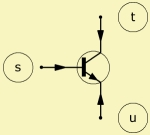

 |
||
| Transistor | FET | Valve |
| Purpose | Transistor, FET or valve |
| Type | Network component (3 pole) |
| Domain | Electric |
| Used in | System |
| See also | Def_Transistor |
 |
||
| Transistor | FET | Valve |
|
|
Transistor 'Any name'
Def=
Node=s=t=u
h11e=
h12e=
h21e=
h22e=
ft=
Ccb=
The Transistor element implements a small signal, broad band model of a transistor, a field-effect-transistor (FET) or a valve in the network. The FET and the valve use the same identifiers as the transistor.
In the circuit-diagram shown to the right, Y1 is the input-admittance, which tends to zero in the case of a FET and valve within the audio-frequency-range. Y2 is the so-called reverse-transfer-admittance. You can usually neglect Y2 in the audio-frequency-range. Y3 is the output-admittance. g is the forward trans-conductance.
In many cases only a generic type of Transistor may be used. In this case, if only the name and the node numbers are specified, the application sets a default value for the h21e parameter: h21e = 100.
For example:
Transistor 'Q11'
Node=100=0=101
When you use many Transistor-elements of the same type it may be more convenient to enter the Transistor-parameters only once at the definition part as Def_Transistor and refer to it with the help of the Def= parameter.
For example:
Def_Transistor 'Q1'
h11e=3.5kohm h12e=2e-4 h21e=270 h22e=32uS
ft=200MHz Ccb=3.5pF
System 'S1'
...
Transistor 'Q11' Def='Q1' Node=100=101=101
Transistor 'Q12' Def='Q1' Node=200=201=201
...
In some cases it is very practical to be able to over-write some of the parameters of Def_Transistor, for instance for testing purpose.
For example:
Def_Transistor 'Q1'
h11e=3.5kohm h12e=2e-4 h21e=270 h22e=32uS
ft=200MHz Ccb=3.5pF
System 'S1'
...
Transistor 'Q11'
Def='Q1' Node=100=101=101
h21e=100 // over-writing h21e
Pole s is the base, pole t the collector and pole u the emitter of the transistor. The small-signal four-pole-matrix of the emitter-circuit He is:

Note, here UBE = ∂UBE, UCE = ∂UCE, IC= ∂IC and IB= ∂IB. The ∂ means a variation of the value at a certain point of operation.
The frequency-dependent characteristic of the transistor is simulated with the help of the transition-frequency ft of the current-gain h21E = β and the collector-base-capacitance Ccb.
The following parameters form the admittances of the Transistor equivalent-circuit:
Y1 = 1/h11e + jω·CD with CD = g/(2π·ft)
Y2 = -h12e/h11e + jω·Ccb with Ccb collector-base capacitance
Y3 = h22e = 1/Rce with Rce output resistance
g = h21e/h11e with g forward trans-conductance in Siemens [S]
The internal base-bulk-resistance in the equivalent-circuit-diagram of Giacoletto is not taken into account here. If the transistor is driven from a low-resistance-source, you may have to insert this resistance externally, so that the frequency characteristic can be correctly reproduced via the capacitance Ccb.
Example: Transistor BC107A in collector-circuit (collector to ground, nodes t=0). Operating point: UCE = 5V, IC = 2mA, f = 1kHz
Transistor 'Q1' //BC107A
Node=1=0=2
h11e=8.7kohm h12e=1.5e-4
h21e=220 h22e=18uS
ft=200MHz Ccb=3.5pF
 In the small-signal-domain the FET or MOSFET is similar to the bipolar
transistor. No separate identifiers are available for describing the
field-effect-transistor. The transistor-hybrid-parameters are used for
data-input, even though, physically, this is not correct.
In the small-signal-domain the FET or MOSFET is similar to the bipolar
transistor. No separate identifiers are available for describing the
field-effect-transistor. The transistor-hybrid-parameters are used for
data-input, even though, physically, this is not correct.
The gate is connected to pole s, drain to pole t and source to pole u.
The parameter h11e is not used, since the driving-point resistance of a FET tends to infinity. h11e is not specified and symbolically set to zero.
The parameter h21e is used as the trans-conductance g, whose value in this case is normalized to the conductance of one Siemens, and is thus without unit.
In this case h22e corresponds to the inverse of the drain-source-output-resistance h22e = 1/RDS.
The frequency-dependency of the FET is simulated with the help of the transition frequency ft, the forwards trans-conductance g and the drain-gate-capacitance, which value gets assigned to the identifier Ccb. The transition frequency is:
ft = g/(2π·CGS)
with GGS gate-source-capacitance
Y1 = jω·CGS with CGS = g/(2π·ft) (gate-source-capacitance)
Y2 = jω·CDG with CDG drain-gate-capacitance (corresponds to Ccb)
Y3 = h22e = 1/RDS with RDS drain-source-resistance
 The small-signal behavior of the triode and the pentode is similar to the FET.
There are no dedicated identifiers to describe the valve parameters.
As with the FET, the transistor-hybrid-parameter are used for the data input.
The small-signal behavior of the triode and the pentode is similar to the FET.
There are no dedicated identifiers to describe the valve parameters.
As with the FET, the transistor-hybrid-parameter are used for the data input.
The grid of the valve is connected to pole s, the anode to pole t and the cathode to pole u.
The parameter h11e is not used, since the driving-point resistance of a valve tends to infinity. h11e is not specified and is symbolically set to zero.
The parameter h21e is used as the trans-conductance g of the valve, which value in this case is normalized to the conductance of one Siemens, and is thus without a unit.
In this case h22e corresponds to the inverse of the valve-resistance h22e = 1/Ri.
The frequency-dependency of the valve is simulated with the help of the transition-frequency ft, the forward-trans-conductance g and the anode-grid-capacitance, which value gets assigned to the identifier Ccb. The transition frequency is:
ft = g/(2π·CGK)
with GGK grid-cathode-capacitance
Y1 = jω·CGK with CGK = g/(2π·ft) (grid-cathode-capacitance)
Y2 = jω·CAG with CAG anode-grid-capacitance (corresponds to Ccb)
Y3 = h22e = 1/Ri with Ri internal valve-resistance